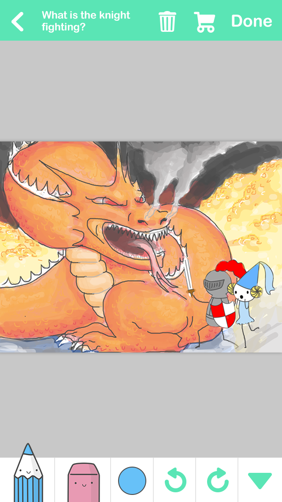

Nick Barr
Hi there! I'm a product builder based in Brooklyn, New York.
I focus on products that help people be creative, productive, & more connected.
Currently, I split my time between collaborations, personal projects, & client work.
Organizations where I've mentored &/or given talks include: Coalition for Queens, Future of Web Design, Internet Week New York, Orbital, Startup Institute, & Techstars.
I'm @nsbarr on Twitter, Medium, & others. To get in touch, email me at nsbarr@gmail.com.
New interfaces for expression
I enjoy helping people express themselves in new ways. I think the QWERTY keyboard is a particularly boring & entrenched way to create text.
In 2015, I helped launch Slash, a custom keyboard for iOS that makes it easy to find & share links without switching apps. Tapping "/" unlocks features like Spotify, Giphy, Contacts, YouTube, & more. Slash helps people maximize "ideas per minute by supporting the rapid communication of ideas in all their forms.
Previously, in 2014, I built Today, in which the player navigates a word through space, colliding into new words to form a sentence. Later that year I built the Prisoner's Keyboard, which lets people construct lipograms by removing letters from the keyboard.
Do work
The word "productivity" has become painfully unhip. But productivity is just a symptom of a particular mental state, what Csikszentmihalyi calls flow.
I'm interested in reclaiming productivity by building products that help people engage in life more deeply with fewer distractions. A current project, l8r, introduces a new, lightweight way to jot down & revisit ideas.
Creativity as habit
In 2011 I joined Canvas Networks, where we built Canvas - a community for sharing & remixing images. Through Canvas, we learned a lot about creativity: that many people think of themselves as talentless; that some think they have don't have time; that the blank page can be terrifying. We took what we learned & built DrawQuest, DrawQuest, which encouraged the habit of creativity with daily drawing challenges. The community grew to +1MM Questers. After the business shut down we open-sourced the project.